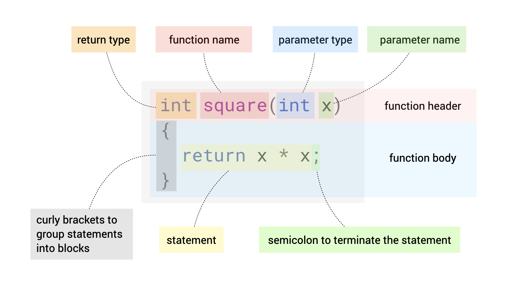

Unit 5: First C Program
Learning Objectives:
After this unit, students should:
- be able to define functions in C, including the definition of:
- the function name,
- the parameters of the function,
- return statement type,
- the body of the function, and
- the return statement;
- understand the usage of the main function in C programs;
- be able to make function calls in C programs;
- understand how values are assigned to the parameters of functions;
- understand the concept of variable scope;
- be able to write statements in C programs, including:
- variable declarations,
- assignment statements, and
- statements that include simple expressions (e.g., arithmetic expressions);
- understand the need and the purpose of including header files;
- be aware of the different numeric types in C and their respective value ranges;
- be able to use man to lookup information about functions provided by other C libraries
- be aware that CS1010 bans the use of global variables and only allows
longanddoubleas numeric types.
Your First C Function
In this unit, we will write and compile your first C program. You have already learned, conceptually, what is a variable, what is a type, and what is a function. Let's see how we apply these concepts to C.
To start, let's look at a simple snippet of C code:
| A trivial function to square an integer | |
|---|---|
1 2 3 4 | |
The code above defines a function named square. The word int appears before the name square. int is used to signify an integer type. Appearing before the name square tells the compiler that square is returning a value of type int.
After the word square, we write the parameters to the function in parentheses ( and ). In between ( and ) is int x: x is the name of the parameter, int is the type of that parameter. Here, x is a variable that stores the value that we wish to compute the square of.
To summarize, in Line 1, int square(int x) defines a function named square that takes in an integer parameter x and is returning a value, which is also an integer. This line is known as the header of the function.
The next three lines are written in between curly brackets { and }. You will see these used a lot in C and other programming languages with C-like syntaxes, such as JavaScript, C++, and Java. These curly brackets group a block of statements together. In this example, this block defines how the function square computes the square of x, and what it returns. This is the body of the function.
In this function body, there is only one statement return x * x; within the block. A statement is a unit in a programming language that expresses either a command to be executed or declares a new variable or function. The word return says that this function square should return the following value, computed as x * x (x multiply by x). This statement is terminated by a semicolon ;.

You also see that the line that starts with return is indented. We use indentation extensively to indicate the body of a block. Since we can have nested blocks, indentation makes our code easier to read and understand.
The words int and return that appear above are keywords defined in the C programming language, and they are reserved for the special meaning that they represent (a type and a command to return a value from a function). We cannot repurpose keywords in C. For instance, we cannot introduce a variable called int.
Your First C Program
We are now ready to write our first C program. The first program computes the square of the hypotenuse of a right-angled triangle with a base of 4 and a height of 3.
| Calculating the hypotenuse of a triangle with base 4 and height 3. | |
|---|---|
1 2 3 4 5 6 7 8 9 10 11 12 | |
Remember that a C program consists of a bunch of functions, calling each other. The most important function is called main, and it is the entry point to the program. It is where the operating system will begin to execute the program. Every program must define exactly one function called main.
1 2 3 4 | |
main returns an integer of type int to the operating system, to signal to the operating system whether the program exits successfully or not. In this case, we always return 0 (success) assuming that nothing goes wrong for simplicity. This is the second example where you see the keyword return in action.
In modern C, the main function always returns 0 when it exits. So, we will skip this statement return 0; from the main function from now on.
Variable Declaration
In the example above, you also see the lines
1 | |
This is a declaration statement (terminated with a semicolon, again). Each statement declares a variable with its corresponding type (int here). We gave each variable a name, here we call the variable hypotenuse_square.
We have said in Unit 2 that a variable is a location in memory that holds a value. There are two main approaches to access this value. The first is through the address of the memory location. We will examine this way of accessing a value in great details in Unit 15. The second approach, which is much more direct and convenient, is to give this location a descriptive variable name, and access the value through its name. The latter approach is what we will use most of the time.
All variables must be declared with its corresponding type before used in C. Indicating the type during declaration lets the computing device running the program knows how much memory should be reserved for the value of this variable, and subsequently, how to interpret the binary sequence stored associated with this variable.
Each declaration is valid only within the scope of its declaration. A variable is only visible within the innermost block that encloses the declaration, as specified by the { and }.
In the example above, the variable hypotenuse_square is visible only in the body of main, but not in the body of square.
We cannot re-declare the same variable (i.e., with the same name), with the same type or otherwise, within the same scope. Two variables in different blocks, however, are allowed to have the same name.
| Example of variable redeclaration. | |
|---|---|
1 2 3 4 5 6 7 8 | |
Compiling the code above would lead to an error on Line 7.
Compilation Error vs. Run-Time Errorr
Errors that occur during compiling is called "compilation error". In constrast, errors that occured during execution of a program is called a "run-time error".
The C language allows the declaration of a variable outside any block. In this case, the scope of the variable is the entire file -- which means that the variable can be accessed and modified from anywhere in the code. Such a variable is called global variable.
| Example of a global variable | |
|---|---|
1 2 3 4 5 6 7 8 9 10 11 12 | |
While C allows global variables to be declared and used, the use of global variables is banned in CS1010. CS1010 allows only a subset of C to be used. Particularly, C features that are common pitfalls for beginners and bug-prone are banned. This is so that we can focus this module on problem-solving techniques, rather than the idiosyncrasy of C.
Function Declaration
In C, a function must be either defined or declared before used as well. In the example above, we define square before main. If we switch the order of the two, the compiler will complain, unless we declare the function first. Declaring a function means that we simply state the return type, the name, and the parameters, without the body. Here is an example:
| Declaring a function square before its use and its definition | |
|---|---|
1 2 3 4 5 6 7 8 9 10 11 12 13 14 | |
Assignment Statement
The next line of the code shows an example of an assignment statement.
1 | |
An assignment operator takes the form of:
1 | |
The left_hand_side must be the name of a variable. We first evaluate the right_hand_side of the assignment statement, find its value, then assign the value to the variable named on the left_hand_side. Essentially, this step updates the bits in the memory location reserved for the variable left_hand_side to the given value.
Here, on the right-hand side, we call the function square, which we defined earlier. We call square with arguments 3 and 4 respectively. When we call square with argument 3, we are assigning the parameter x to a value 3 before we execute the body of square.
We use the operator + to add the two results together. The right-hand side should give the value 25, which we then assign to the variable hypotenuse_square.
Note that we use = equal sign for assignment, NOT for checking equality. The C notation for checking for equality is == (we will come back to this later).
All variables must have an assigned value before it is evaluated. Otherwise, the variable holds an indeterminate value. Declaring a variable only reserves the slot in the memory. The value of an uninitialized variable is therefore determined by whatever bit values that happen to occupy that memory slot at the time.
Recap
Before we move on, let's recap some concepts:
- A C program consists of functions, invoking each other. The function called
mainis the entry point and is the first function invoked. - Each function is defined by its returned type, followed by its name, its parameter(s) (within a pair of parenthesis), and its body (within a pair of curly brackets).
- Each function must be defined or declared before it is used.
- The function body consists of one or more statements. We have seen assignment statements (using the
=operator) and return statements, usingreturnas the keyword. - Each variable must be declared before it is used. A declaration starts with its type followed by its name. A variable is only visible within its scope. A variable must be assigned a value before it is evaluated.
- Global variables are banned in CS1010.
Example 2
Let's change the program slightly, so that instead of computing the square of the hypotenuse, we compute the hypotenuse itself. Recall that we said C provides a bunch of predefined functions, include sqrt, which computes the square root of a given number. Since a square root of a number is not necessarily an integer, we need to use a variable with a type that can store a real number.
To represent real numbers, we commonly use the type float (which is short for a floating-point number -- named so due to how a real number is represented in bits). A float type can store 32 bits. To double the precision (64 bits), we can use the type double. A long double type can store either 80-bits or 128-bits, depending on the implementation.
But which one does sqrt returns? To find out the exact specification of a pre-defined function, we can consult the manual (or man for short) pages for the function.
If you type man sqrt on the command line (or place the cursor on sqrt in vim and type Shift+K in command mode), you will see that the sqrt method has the following specification:
1 | |
The sqrt function returns a double precision real number. We can now modify the program above to the following:
| Declaring a function defined externally | |
|---|---|
1 2 3 4 5 6 7 8 9 10 11 12 13 14 15 16 | |
Note that the first line declares the function sqrt because we need to declare a function before it is used. Since sqrt is pre-defined elsewhere, we do not have to supply the function body here. Such practice of declaring a predefined function ourselves, however, is not recommended. Different platforms, compilers, libraries, may provide a different specification for the same function. As such, it is better to use the declaration from the library that provides the predefined function itself. A library usually provides one or more header files, a set of files that contain function declarations, type definitions, and constant definitions. In the case of sqrt, its declaration is contained in a header file called math.h (which we found out through consulting the man pages). To include this file, you add the line #include <math.h> at the top of the program.
| Including header files for declaration of external functions | |
|---|---|
1 2 3 4 5 6 7 8 9 10 11 12 13 14 15 16 | |
File Extension
The convention for file extension for a C program is .c and for a C header file is .h. Even though you are allowed to name the files with any extension you like, you should stick to the convention so that it is clear to other tools/programmers what is the purpose of each file.
Compilation Warning and Implicit Type Conversion
The compiler gives a warning on the expression:
1 | |
The warning says implicit conversion from 'long' to 'double' may lose precision [-Wimplicit-int-float-conversion].
Recall that we cannot represent floating point numbers (double) exactly in a computer; but we can do that with integers (long). Since the expression square(base) + square(height) returns a long value, and we try to pass it into a function that accepts a double, the compiler warns us about loosing precision.
A compiler warning does not stop a binary executable from being generated and executed later. It is a good practice, however, to ensure that your code compiles without any warning. In this context, the compiler will convert the integer number into floating point number for you. This conversion from long to double is done implicitly.
When writing code, it is always better to make the intention explicit. Thus, to perform an explicit type conversion, we can do type casting in C. We just need to put the type that we want to convert to in parentheses, like so:
1 2 | |
Since we now explicitly tell the compiler that we want to convert long to double (and so willing to accept the lost in precision), the warning goes away.
Here is the final code:
| Explicitly casting from long to double | |
|---|---|
1 2 3 4 5 6 7 8 9 10 11 12 13 14 15 16 17 | |
Other Types in C
An int variable is usually 32-bits long. If we only need 16 bits, we use the type short int, or just short. If we only need 8-bits, we use the type char (short for character).
Note that the above said an int is usually 32 bits. Remember (from Unit 1) that a C program gets compiled into machine code for a specific CPU architecture. The C language standard only guarantees that an int is at least 16 bits. Although most C compilers compile int to 32 bits, there is no guarantee!
If we need something more than an int, we can use long int, or just long. The C standard guarantees that a long is at least 32 bits. Depending on the implementation, it sometimes compiled to 32-bits, sometimes 64-bits. To get even longer, we can use the type long long int, or just long long, which is guaranteed to be at least 64 bits1.
Signed vs. Unsigned
We have seen earlier that interpreting the same sequence of bits as signed or unsigned would result in a different value. By default, all types in C refer to signed types2. If you want a variable that holds only non-negative integers, you can add the keyword unsigned to the front of the type. Doing so would mean that the range of non-negative values you can store in the variable is doubled, without adding more bits (since the bit used to present the + or - sign is no longer needed).
For instance, since we know that square can only return a non-zero integer, we can declare it as:
| Redefining square with unsigned return type | |
|---|---|
1 2 3 4 | |
For most practical purposes in CS1010, a (signed) long suffices. We introduce the notion of signed vs. unsigned for your information so that you know what they are when you come across them in other scenarios. Mixing signed and unsigned can lead to subtle bugs in your code. As such, we will avoid mixing them as much as we can, and we will use signed long by default for CS1010. You may choose to use them appropriately in another context, especially for an embedded system or low-level programming.
In CS1010, we will only use long and double to represent integers and floating-point numbers. Again, this is to allow us to focus on problem-solving techniques rather than on issues related to precision. The only place we should use other types is if the functions that we use requires it (e.g., main must return int, so we have no choice there).
Unsigned Real Numbers?
There are no unsigned versions of float and double. To understand the reason, we have to go further into how floating points numbers are represented in bits. That is a topic for another module.
C Pro Tips For Beyond CS1010: stdint.h
Since the number of bits for int, long, and long long could differ, to write a C program that is portable (i.e., works on different platforms, architecture, operating systems), we have two options:
- Do not write a program that assumes a specific number of bits is used for a certain type, or
- Use the type defined in the header file
stdint.h:int8_t,uint8_t,int16_t,uint16_t,int32_t,uint32_t,int64_t,uint64_t. The suffix_tis a convention to indicate that this is a customized type (more on this in later units). The prefixuindicates that the type is an unsigned type. The numbers8,16,32, and64indicate the number of bits for each type. Thus,uint32_tis guaranteed to be of size 32 bits, and can hold unsigned integer values from \(0\) to \(2^{32}-1\).
Problem Set 5
Problem 5.1
In the following valid in C? Try to compile the program and see if you encounter any compilation error. What can you infer about what is allowed or not allowed in C? What could go wrong even if C allows?
(a)
1 2 3 4 5 6 7 8 9 10 11 12 13 14 15 | |
(b)
1 2 3 4 5 6 7 8 9 10 11 12 13 14 15 | |
(c)
1 2 3 4 5 6 7 8 9 10 11 12 13 14 15 | |
(d)
1 2 3 4 5 6 7 8 9 10 11 12 13 14 15 16 | |
(e)
1 2 3 4 5 6 7 8 9 10 11 12 13 14 15 16 | |
(f)
1 2 3 4 5 6 7 8 9 10 11 12 13 14 15 16 17 18 | |
(g)
1 2 3 4 5 6 7 8 9 10 11 12 13 14 15 16 | |